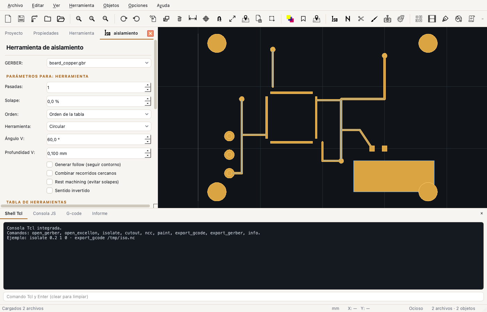

Interfaz
Ventanas, paneles y controles
La ventana sigue el esquema de FlatCAM: un árbol de proyecto a la izquierda, el visor en el centro y una consola inferior, con paneles de herramienta que se abren como pestañas.
La apariencia es moderna y no busca copiar píxel a píxel la interfaz original. En Opciones → Temas hay cuatro opciones: Moderno claro, Moderno oscuro, Sistema claro y Sistema oscuro. Las dos primeras usan el estilo Fusion de Qt con bordes redondeados, tipografía del sistema y acento ámbar; las dos del sistema usan los controles nativos de la plataforma. Todas se aplican al instante, sin reiniciar, y los iconos originales de FlatCAM se adaptan automáticamente a la variante oscura.

Barra de menús
| Menú | Contenido principal |
|---|---|
| Archivo | Nuevo, abrir, abrir proyecto, guardar, importar/exportar, imprimir, scripts, preferencias. |
| Editar | Deshacer/rehacer, cortar/copiar/pegar objetos, seleccionar todo, transformar. |
| Ver | Ajustar a ventana, zoom, rejilla, panel de objetos, vista 3D. |
| Herramienta | Aislamiento, NCC, corte, pintura, perforación, fresado, thieving, paste, QR, film, calculadoras. |
| Objetos | Duplicar, eliminar, editores Gerber/Excellon/geometría, booleanas, propiedades. |
| Opciones | Unidades, temas, rejilla, snap, nivel BASIC/ADVANCED, preferencias. |
| Ayuda | Manual, atajos, especificaciones, reportar problema, acerca de. |
Barra de herramientas
Los iconos son los originales de FlatCAM. Los más usados:
| Icono / acción | Qué hace |
|---|---|
| Abrir, proyecto, guardar | Operaciones de archivo y proyecto. |
| Ajustar / zoom | Encaja la vista en el contenido o cambia el zoom. |
| Aislar, NCC, cortar, pintar, perforar, fresar | Abre la pestaña de la herramienta correspondiente. |
| Panelizar, film, paste, thieving | Herramientas de fabricación y composición. |
| Punch, extraer taladros, fiduciales, calibrar | Utilidades sobre objetos existentes. |
| Editor, duplicar, eliminar, transformar | Edición del objeto seleccionado. |
| Medir, origen, ir a coordenadas | Navegación y medición. |
Panel izquierdo
Tiene tres pestañas fijas:
Proyecto
Árbol con los objetos agrupados en Archivos, Herramientas y G-code, con encabezados grandes, en negrita y color de acento. La columna Vis muestra u oculta cada capa. Un clic selecciona; doble clic abre la pestaña Herramienta del objeto.
Propiedades
Nombre editable, tipo, área, visibilidad, límites X/Y, ancho/alto, unidades y detalles del formato (aperturas, flashes, segmentos, regiones, taladros, herramientas). También muestra propiedades personalizadas guardadas en el proyecto.
Herramienta
Se abre al elegir una operación o al hacer doble clic en un Gerber/Excellon del proyecto. Su estructura es siempre parecida:
- Selector de objeto (GERBER: o EXCELLON:).
- Parámetros propios de la herramienta.
- Tabla de herramientas con una fila por diámetro.
- Parámetros comunes de mecanizado (Z, avances, postprocesador).
- Botones Generar geometría/trazado y Generar CNCJob.
Canvas
- Rueda: zoom alrededor del cursor.
- Arrastrar: desplazar la vista.
- F: ajustar a ventana.
- Clic: seleccionar el objeto bajo el cursor.
- Doble clic: hacer zoom al objeto.
- Barra inferior: coordenadas X/Y en la unidad activa.
El cobre se dibuja relleno o como contorno según el modo del objeto. Los recorridos generados se muestran con otro color. La rejilla se puede ocultar desde Ver; los ejes X=0/Y=0, las reglas y las medidas de la PCB permanecen visibles.
Consola inferior
| Pestaña | Uso |
|---|---|
| Shell Tcl | Intérprete Tcl real con 71 comandos de FlatCAM. |
| Consola JS | API JavaScript con flatcam.*. |
| G-code | Último programa generado, con resaltado y búsqueda. |
| Informe | Mensajes de importación, avisos y errores. |
La consola recuerda si estaba visible, su altura y la pestaña activa. El botón × la oculta y Ver → Consola la vuelve a mostrar.
Barra de estado
Muestra la unidad activa (mm/in), las coordenadas del cursor, el estado de la operación y la cantidad de objetos cargados. Los mensajes temporales aparecen a la izquierda.
Nivel BASIC / ADVANCED
En Opciones → Nivel avanzado se alterna entre dos vistas. En BASIC se ocultan parámetros que no se usan habitualmente: V-shape, follow, combine, rest, orden, offsets, conexión NCC, gaps, boquillas, PPM y tipos de film. En ADVANCED se muestra todo. La elección se guarda.
Si no encontrás un parámetro, revisá que estés en nivel ADVANCED y que la pestaña correcta esté abierta. Cada herramienta recuerda su estado mientras la app está abierta.
Tema y colores
El tema se elige en Opciones → Temas: Moderno claro, Moderno oscuro, Sistema claro o Sistema oscuro. Se aplica al instante. Los colores de fondo, cobre, recorridos y trayectorias se configuran en Preferencias → Colores.